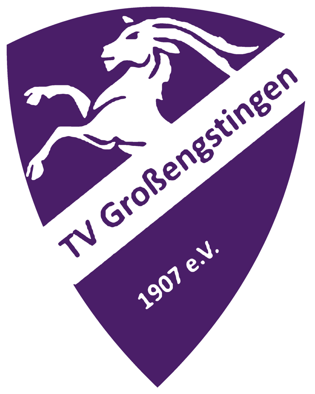
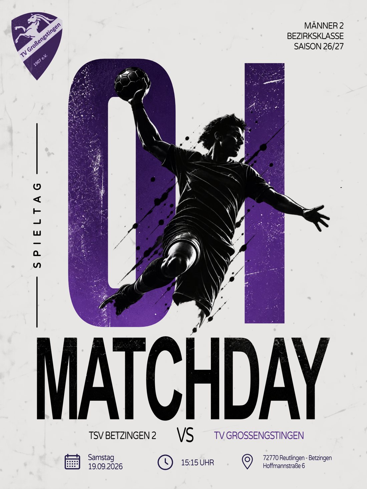
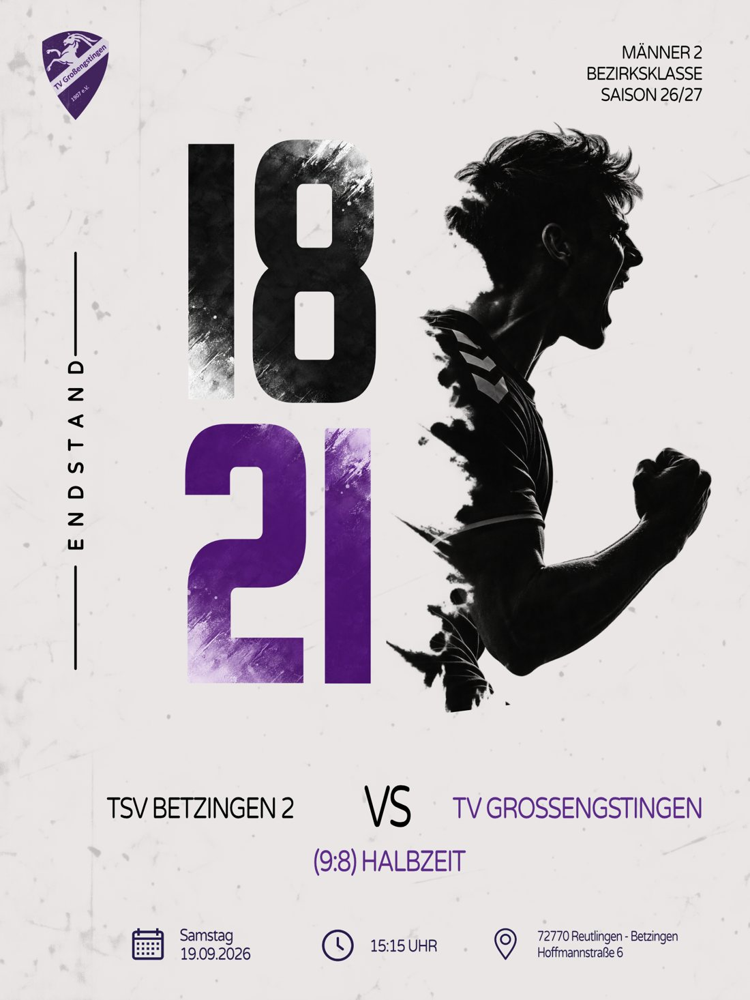

TV Großengstingen
2026Spielankündigungen, Ergebnisse und alles rund um die Mannschaft: Ich gestalte und betreue den Instagram-Kanal der zweiten Herrenmannschaft meines Handballvereins.

Social Media Manager für meinen Heimatverein
Für die zweite Herrenmannschaft des TV Großengstingen kümmere ich mich um den Instagram-Auftritt. Ich plane Beiträge, gestalte die Grafiken und sorge dafür, dass Fans, Spieler und Familien immer wissen, wann und wo gespielt wird und wie es ausgegangen ist.
@tvgrossengstingen_m2In der Saison 26/27 bin ich zusätzlich Mannschaftsvorsitzender der Männer 2.
- Rolle
- Social Media Manager
- Außerdem
- Mannschaftsvorsitzender, Saison 26/27
- Kanal
- Mannschaft
- Männer 2, Bezirksklasse
Jede Saison ein neuer Look
Für jede Saison entwickle ich ein eigenes Design, das sich durch alle Beiträge zieht. So erkennt man die Posts im Feed sofort, und trotzdem fühlt sich jede Saison frisch an. Die aktuelle Linie setzt auf helles, körniges Papier, riesige Zahlen in Vereinslila und dynamische Spieler-Silhouetten.
- Ein festes Raster: Wappen, Liga und Saison oben, Paarung und Spielinfos unten
- Die große Zahl trägt die Hauptinfo, also Spieltag oder Endstand
- Ankündigung und Ergebnis teilen sich den Aufbau und wirken im Feed wie ein Paar


Was auf den Kanal kommt
Spielankündigungen
Gegner, Datum, Uhrzeit und Halle auf einen Blick
Ergebnisse
Endstand und Halbzeit, passend zur Ankündigung
Rund ums Team
Alles, was sonst in und um die Mannschaft passiert